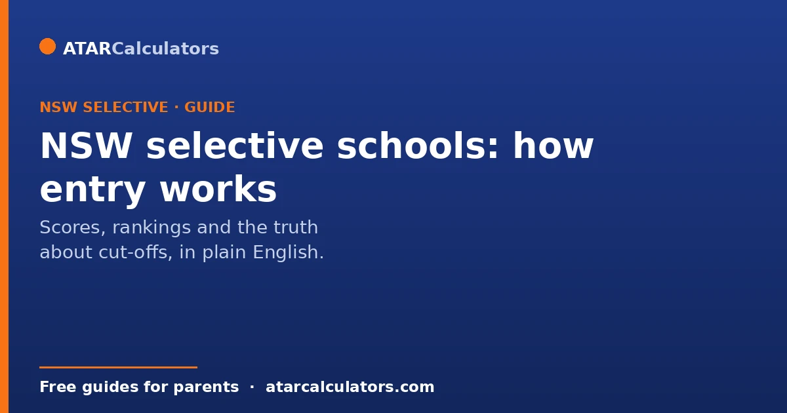
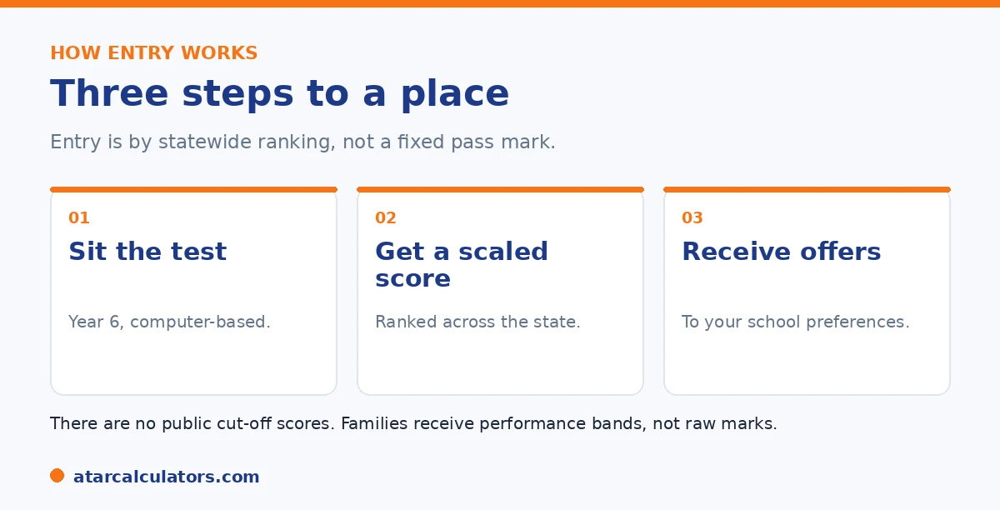

Here is the short version. Entry to a NSW selective high school is decided by a statewide ranking. It comes from one test, the Selective High School Placement Test, sat in Year 6 for entry in Year 7. The test has four sections: Reading, Mathematical Reasoning, Thinking Skills, and Writing. There are no published cut-off scores, and families get performance bands rather than raw marks. Any specific cut-off you see online is an estimate. An equity placement model and gender balance also affect who gets an offer.
Almost every parent starts with the same question: what score does my child need? It is a fair question, and the honest answer surprises people. The NSW Department of Education does not publish cut-off scores for any selective school.
That does not mean you are flying blind. Below is how entry really works, what the test covers, and what a competitive result looks like. To estimate a placement score, use our NSW selective calculator.
Key takeaways
- Entry is by a statewide ranking from one test, sat in Year 6.
- The test has four sections: Reading, Mathematical Reasoning, Thinking Skills, Writing.
- There are no published cut-off scores. Numbers online are estimates.
- Families get performance bands, not raw marks.
- An equity model and gender balance also affect offers.
- You can list up to three school preferences.
How entry actually works
Entry is not a pass or fail. Your child sits the Selective High School Placement Test in Year 6. Their marks are turned into scaled scores. These combine into a single placement score, used to rank every candidate across the state. Offers then go to the highest ranked students for the schools they nominated.

Because it is a ranking, your child is competing against everyone else who sat the test that year. There is no fixed line to clear. Where your child sits in that order, against their chosen schools, decides the outcome.
What the test covers
The test is fully computer-based and made up of four sections. Here is the structure at a glance.
| Section | Time | Format |
|---|---|---|
| Reading | 45 minutes | Multiple choice, mixed text types |
| Mathematical Reasoning | 40 minutes | Multiple choice, no calculator |
| Thinking Skills | 40 minutes | Multiple choice, logic and reasoning |
| Writing | 30 minutes | One typed response |
About 155 minutes of testing in total, all on a computer at a test centre.
The sections reward reasoning and applying knowledge, not memorising facts. For a fuller breakdown, see our guide to the 2026 test format.
The truth about cut-off scores
This is the part most guides get wrong. The NSW Department of Education does not publish cut-off scores, and it does not release raw marks or a score total. So any exact cut-off you find online is an estimate, often based on past years. Sources disagree with each other.
Cut-offs also change every year, because the test is ranked against the cohort that sat it. A harder paper or a stronger field shifts the line. The practical takeaway is to stop chasing a magic number and aim instead for strong results across all four sections.
Want a rough idea of where a practice result sits?
Try the NSW selective calculator →How to read your result
Families do not get a mark or a rank. Instead, the report shows a performance band for each section, describing roughly where your child sat compared with others. The bands give you a sense of strengths and weaker areas, even without a number.
This is why the per-section profile matters. A near miss usually points to one fixable area. That might be pacing in Reading, or the matrix questions in Thinking Skills, rather than a broad gap.
The equity placement model
Not every place is filled by rank alone. NSW runs an equity placement model. It reserves a share of places for students from disadvantaged backgrounds, so talented children are not held back by circumstances. Gender balance is also considered at some schools.
This means two children with similar results may have different outcomes, depending on the schools they chose and how these models apply. It is worth knowing, so an outcome does not feel arbitrary.
Understanding the equity model removes a lot of the mystery, and frustration, around selective offers. Alongside places filled on test performance, a share is set aside for students from disadvantaged backgrounds. This means a strong applicant who has faced genuine hardship is not shut out by circumstances beyond their control. Some schools also weigh gender balance.
The effect is simple. Offers do not fall in one perfectly straight line down the rank order. That is a large part of why no single official cut-off is published, and why any figure circulating online is only an estimate.
For families, this has two useful implications. First, if your child has faced real disadvantage, it is worth finding out whether an equity consideration applies. It exists precisely to give a fairer chance against the same standard. Second, for everyone, the outcome depends on more than a raw score. The schools you preference, and how the placement models apply, both shape the result. So an offer, or a near miss, reflects the system working as designed rather than anything arbitrary.
The sound way to plan is straightforward. Prepare for a strong, balanced result across the sections. Preference the schools you would genuinely attend in true order, so one result is used to its fullest. Treat the process as competitive, but fairer than a single cut-off would imply. Knowing the equity model is at work helps an outcome make sense, whichever way it falls.
Choosing your school preferences
When you order your preferences, list the school you most want first, since offers follow your ranked list. It is wise to include at least one school where your child has a solid chance, so a place is likely even if the most competitive options do not come through.
A common mistake is listing three of the most competitive schools and no realistic backup. If your child ranks just below the line at all three, they can miss out entirely. A sensible list mixes ambition with a realistic option. See which schools are most competitive in our top selective schools guide.
Preparing for the test
The Department says coaching is not necessary, and there is no credible evidence it secures a place. What does help is steady, well-structured practice over months, especially for the reasoning sections that are unfamiliar to most students.
Build skills first, then add timed, computer-based practice closer to the test. For a full plan, see our 12-month preparation guide.
Who sits the test, and when
The NSW selective test is sat by Year 6 students for entry into Year 7. It runs in a set testing period each year, at test centres, on computer. Families apply in the year before entry, through the Department of Education.
So this is a Year 6 decision, made the year before high school starts. Registering on time matters, as late applications are generally not accepted.
If your child is unwell or has a disability
There are provisions for students who are unwell on the day or who have a disability. Illness and misadventure can be reported, and disability provisions can be requested in advance, such as extra time or adjusted conditions.
So if something affects your child's test, do not stay silent. Follow the Department's process to have it considered. These provisions exist to keep the test fair.
Reserve lists and later offers
Not every offer is made in the first round. Schools keep reserve lists, and places can open up as families decline offers or move. So a child just below the initial offers may still receive a place later.
This means an early miss is not always final. If your child is close, it is worth staying hopeful through the reserve process rather than assuming the door is shut.
Reviews of placement decisions
There is a limited review process for placement decisions, mainly where illness, misadventure or an error may have affected the result. It is not a way to challenge the difficulty of the test or the score itself.
So if you believe something specific went wrong, follow the Department's review process within the timeframe. For most families, though, the result stands as issued.
Setting realistic expectations
Competition for selective places is intense. Many capable, well-prepared students miss out, simply because there are far more strong applicants than places. That is not a reflection on your child.
So go in with a good back-up plan. A strong local high school, with support and enrichment at home, gives an excellent education. Selective entry is one path among several good ones.
You can list several schools
You do not apply to just one selective school. You list several in order of preference, and the placement process considers your child's score against demand at each, working down your list.
So how you order your preferences matters. Placing a realistic, strong school high can secure a good offer, while listing only the most contested schools risks missing out. Think carefully about the order, not just the names.
The test, not school marks, decides
Under the current model, the placement is based on the entrance test itself. School assessment scores are no longer used to moderate or adjust a child's result, as they once were.
So your child's performance on the day is what counts. This makes the test high-stakes, but also means a child from any school is judged on the same exam, without their school's marks affecting the outcome.
Preparation and mindset
Steady preparation and a calm child matter more than intensive coaching. Over-drilling a young student often raises anxiety, which works against them on test day and can pull a result below their true ability.
So aim for confident familiarity, not exhaustion. A child who knows the format, reads widely, and feels relaxed usually performs closer to their real potential than one who has been pushed too hard.
Keeping your child at the centre
The selective process can be stressful for families, and that stress can spill onto the child at the heart of it. So it helps to keep their wellbeing central through the whole thing.
A selective place is one path, not the only route to a good future. Plenty of children flourish at their local school. So encourage your child, prepare them calmly, and make sure the process never costs them their confidence or their love of learning.
Apply on time, and check the details
Applications open in the year before entry and close on a firm date. Missing the window usually means missing that year's intake, however strong your child is. So the practical first step is simply to apply on time.
So check the Department of Education's current dates and requirements carefully, well ahead. Note the testing period, any provisions you need to request, and how to list preferences. Getting the administration right is the part of the process fully within your control.
Common questions
What score do you need for a selective school in NSW?
There is no published score to aim for, because the Department does not release cut-offs and ranks students against the cohort each year. Aim for strong results across all four sections rather than a fixed number.
Are there published cut-off scores for NSW selective schools?
No. The NSW Department of Education does not publish cut-off scores, raw marks, or a score total. Any exact cut-off you see online is a third-party estimate, and these change every year.
How are selective schools ranked for entry?
Your child's marks are scaled and combined into a placement score, which ranks every candidate statewide. Offers go to the highest ranked students for the schools they nominated.
What is the maximum placement score?
The Department does not publish a score total or maximum. The old 300-point system is gone, and current figures seen online are estimates, not official.
How do I read my child's result?
Families get a performance band for each section, not a mark or rank. The bands show roughly where your child sat compared with others and point to strengths and weaker areas.
How many schools can I choose?
You can list up to three selective schools in order of preference. It is wise to include a realistic option, not only the most competitive schools. That way, your child does not miss out if they rank just below the line.
What is the equity placement model?
It reserves a share of places for students from disadvantaged backgrounds, so talented children are not held back by circumstances. Gender balance is also considered at some schools.
Does school assessment count toward the score?
Its role was cut sharply in the test redesign, and the placement score is now driven by the test. There is a provision so students without a school assessment mark are not disadvantaged. Confirm current details with the Department.
Estimate a placement score
Enter practice section results to see a rough competitiveness guide. Free, and no signup.
Open the NSW selective calculator →Related guides
This guide is general information for parents, not formal advice. The NSW Department of Education sets the rules, and details like dates, weightings and the equity model can change. It does not publish section weightings, the score total, or school cut-off scores. So always confirm current details on the official NSW selective high schools pages. Reviewed by the ATARCalculators Editorial Team.